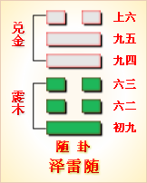

<!DOCTYPE html PUBLIC "-//W3C//DTD XHTML 1.0 Transitional//EN" "http://www.w3.org/TR/xhtml1/DTD/xhtml1-transitional.dtd">

<html xmlns="http://www.w3.org/1999/xhtml">
<head>
<meta content="text/html; charset=utf-8" http-equiv="Content-Type"/>
<title>周易第十七卦：随�?泽雷�?兑上震下原文解释翻译-周易-国学�?/title>
<meta content="周易,随卦,泽雷�?兑上震下" name="keywords"/>
<meta content="周易,随卦,泽雷�?兑上震下，周易第十七卦：随卦 泽雷�?兑上震下解释翻译�?（泽雷随）兑上震�?《随》：元亨，利贞，无咎�?初九，官有渝，贞吉，出门交有功�?六二，系小子，失丈夫�?六三，系丈夫，失小子，随有求，得。利居贞�?九四，随有获，贞�? name="description"/>
<link href="css.css" media="screen" rel="stylesheet" type="text/css"/>
</head>
<body>
<div class="gxlayout">
</div>
<div class="gxlayout">
<div class="ihead">
<div class="title"><a>周易</a></div>
<ul class="more fl">
<li>当前位置:<a>国学梦首�?/a> &gt; <a>国学经典</a> &gt; <a>经部</a> &gt; <a>四书五经</a> &gt; <a>周易</a> &gt;  周易第十七卦：随�?泽雷�?兑上震下原文解释翻译</li>
</ul>
</div>
<div class="gxbl fl">
<div class="latitle">

<h1>周易第十七卦：随�?泽雷�?兑上震下</h1>
<div class="lainfo"><span>作者：佚名</span> <span>全集�?a>周易</a></span> <span>来源：网�?/span> <span>[<a rel="nofollow" target="_blank">挑错/完善</a>]</span></div>
</div>
<div class="lacontent">
<div class="clearfix"></div>
<!--<!-- allowfullscreen="" frameborder="0" height="36" src="http://www.ximalaya.com/swf/sound/yellow.swf?id=1382580&amp;auto=true" width="260"></iframe>-->
<p style="text-align:center"><strong> </strong></p>
<p style="text-align:center"><a>周易第十七卦详解</a></p>
<p style="text-align:center"><a>第十七卦初九爻详�?/a>　<a>第十七卦六二爻详�?/a>　<a>第十七卦六三爻详�?/a></p>
<p style="text-align:center"><a>第十七卦九四爻详�?/a>　<a>第十七卦九五爻详�?/a>　<a>第十七卦上六爻详�?/a></p>
<p><strong><a target="_blank">周易</a>第十七卦�?泽雷�?兑上震下</strong></p>
<p>随：元亨利贞，无咎�?/p>
<p>彖曰：随，刚来而下柔，动而说，随。大亨贞，无咎，而天下随时，随之时义大矣�?</p>
<p>象曰：泽中有雷，�?君子以晦入宴息�?/p>
<p>初九：官有渝，贞吉。出门交有功。象曰： 官有渝，从正吉也。出门交有功，不失也�?/p>
<p>六二：系小子，失丈夫。象曰：系小子，弗兼与也�?/p>
<p>六三：系丈夫，失小子。随有求得，利居贞。象曰：系丈夫，志舍下也�?/p>
<p>九四：随有获，贞凶。有孚在道，以明，何咎。象曰：随有获，其义凶也。有孚在道，明功也�?/p>
<p>九五：孚于嘉，吉。象曰：孚于嘉，�?位正中也�?/p>
<p>上六：拘系之，乃从维之。王用亨于西山。象曰：拘系之，上穷也�?/p>
<p><strong><a href="17_随卦.html" target="_blank">随卦</a>卦象，泽雷随卦的象征意义</strong></p>
<p><strong>泽雷随卦，指随从、随和、跟随等等。这个卦是异卦相叠，下卦为震，上卦为兑。震为雷、为动；兑为悦。动而悦就是“随”�?/strong></p>
<p>在此卦之中，震为刚，在下�?兑为柔，在上卦。一刚一柔，合在一起显得很随和。另外震为刚，本应在上，兑为柔，本应在下。现在位置互换，说明震来兑去，彼此往来密切，关系随和。卦中是震下兑上，震代表动，兑，代表愉悦。震在下动，兑觉得愉悦，以此表现兑能随着震的行动而愉悦，也具有随的意思�?/p>
<p>泽雷随卦指相互顺从，己能随物，物能随己，彼此沟通。随必依时顺势，有原则和条件，以坚贞为前提�?/p>
<p>随卦位于<a href="16_豫卦.html" target="_blank">豫卦</a>之后，《序卦》之中说道：“豫必有随，故受之以随。”意思是说，愉悦一定有人随从，所以接下来就谈随卦了�?/p>
<p>《象》曰：泽中有雷，随。君子以向晦入宴息�?/p>
<p>《象》中这样解释随卦：震为雷在下，兑为泽在上，全卦如同泽水中响起巨雷，而泽水随着雷声而震动，故本�?a target="_blank">取名</a>为随。君子应该学习这种随的精神，随着时间的变化而决定自己的行为，白天勤奋干活，到晚间就应该入室休息�?/p>
<p>泽雷随卦启示了随时变通的道理，属于中中卦。《象》中这样来断此卦：泥里步踏这几年，推车靠崖在眼前，目下就该再使力，扒上崖去发财源�?/p>
<p>泽雷随卦名为随。《说文》中的解释是：“随，从也。”可见随的本义是跟从的意思。而跟从者必然顺从领导者，于是“随”也有顺从的含义。所以《广雅》中说：“随，顺也。”即随含有“依顺、顺从”的意思。人们为什么要跟随、顺从你�?因为你能给人们带来喜悦而没有伤害。所以《周易》将随卦安排在豫卦之后，这便是《序卦传》中所说的：“豫必有随，故受之以随。”《杂卦》中说：“随，无故也。”指的便是因为没有伤害，所以有人追随。打个比方，中国人民为什么要跟党走呢?因为党为人民谋福利，党是人民的大救星。再比如西方人为什么相信耶稣�?因为耶稣能够给人们带来喜乐而远离伤害和罪恶。豫卦表示和平盛世人们尽享欢乐，所以接下来是人民拥护君王，跟随君王的随卦�?/p>
<p>从卦象上分析，豫卦上卦为兑为泽为喜悦，下卦为震为雷为动，雷在泽中、心喜而动便是豫卦的卦象。雷怎么会藏在沼泽地里呢?原来，古人通过观察，发现春雷响过之后，惊醒了蛰伏的动物，于是万物苏醒，大地上开始呈现出勃勃生机。可是到�?a target="_blank">秋天</a>的阴历八月以后，便没有雷声了，一些动物开始为冬眠做准备。通过这个现象，古人认为这就是<a target="_blank">天道</a>的善意，天气转暖了，天用雷声唤醒大地上的万物;天气转凉了，天便把雷藏了起来，不再惊动大地上的万物了。由于此时沼泽地里也会发出一种声音，所以人们便认为雷到了秋天便藏到了沼泽地里了。从这个卦象中可以看出，随卦还有随时而动的含义。�?a href="51_震卦.html" target="_blank">震卦</a>代表动，<a href="58_兑卦.html" target="_blank">兑卦</a>代表喜悦，所以有随着喜悦而动，追随喜悦的含义�?/p>
<p><strong>随卦之象：云中雁传书，主信至；一堆钱，有才义；朱门内有人坐，主坐官府；一人在门外立，主士人求进，欲得变身。凡事值此，得贵人力。良石琢玉之卦，如水�?a target="_blank">�?/a>之象�?/strong></p>
<p>关键词：周易,随卦,泽雷�?兑上震下</p>
<div class="clearfix"></div>
<div class="title"><div class="thot">解释翻译</div><span>[挑错/完善]</span></div><p><a href="17_随卦.html" target="_blank">随卦</a>:大吉大利，吉利的占卜，没有灾祸�?/p>
<p>初九：旅馆中发生了变故，但占得吉利。出门同行互相帮助有好处�?/p>
<p>六二：抓住了年少的奴隶，成年的奴隶逃跑了�?/p>
<p>六三：抓住了成年的奴隶，年少的奴隶逃跑了。结伴出门经商是为了获利。占问居住处得到吉兆�?/p>
<p>九四：商人结伴出门是为了获利，占问得到凶兆。押送俘虏上路，互相订立了盟约，没有灾祸�?/p>
<p>九五：俘虏了嘉国的人，吉利�?/p>
<p>上六：把俘虏拘禁起来，紧紧捆住。周文王在歧山把他们作人牲祭视神灵�?/p>
<div class="title"><div class="thot">注释出处</div><span>[请记住我�?国学�?www.guoxuemeng.com]</span></div><p>①随是本卦标题。随的意思是顺从，相随。全卦的内容讲商人出门做生意和贩卖奴隶的情况�?/p>
<p>(2)官：古“馆”字，指馆舍，旅馆�?/p>
<p>(3)交：交往，这里指互相帮助�?/p>
<p>(4)小子：这里指年龄小的奴隶�?/p>
<p>(5)丈夫：这里指成年的奴隶�?/p>
<p>(6)求得：意思是希望获得利益�?/p>
<p>(7)明：这里用作“盟”，意思是订立盟约�?/p>
<p>(8)嘉：周代一个小国的名称，也称“有嘉”�?/p>
<p>(9)维：捆绑�?/p>
<p>(10)�?指周文王。西�?指歧山�?/p>
<div class="clearfix"></div>
<div class="contextdhall clearfix">
<ul>
<li>上一篇：<a href="16_豫卦.html">周易第十六卦：豫�?雷地�?震上坤下</a> </li>
<li>下一篇：<a href="18_蛊卦.html">周易第十八卦：蛊�?山风�?艮上巽下</a> </li>
<li>全   文�?a>周易</a></li>
</ul>
</div>
</div>
<div class="clearfix mt20"></div>
</div>
</div>
<div class="clearfix mt20"></div>
<div class="gxlayout">
</div>
<script>
var _hmt = _hmt || [];
(function() {
  var hm = document.createElement("script");
  hm.src = "https://hm.baidu.com/hm.js?872034ded637616c5cf8e173a446bb0e";
  var s = document.getElementsByTagName("script")[0];
  s.parentNode.insertBefore(hm, s);
})();
</script>
</body>
</html>
